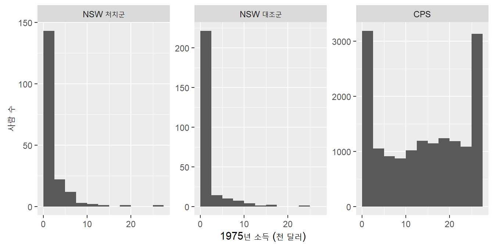

library(tidyverse)
library(janitor)
library(skimr)
library(broom)12주차. 인과관계 보여주기 (1): 무작위통제실험
1 도입
- 이번 주의 질문: 어떤 처치(treatment)가 결과를 바꾸었다고 말하려면 무엇을 비교해야 하는가?
- 직업훈련을 받으면 소득이 늘어날까? 이력서의 이름만 바꾸면 회신이 달라질까?
- 처치: 정책, 프로그램, 개입처럼 그 효과를 알고 싶은 것
- 지난 두 주와 무엇이 다른가
- 예측: 주어진 정보로 결과를 잘 맞히는 것. 왜 그런 결과가 나오는지는 묻지 않음
- 인과: 처치를 바꾸면 결과가 어떻게 달라지는가를 묻는 것
- 예측을 잘하는 모형의 계수라고 해서 그 변수를 바꾸었을 때의 효과는 아님
- 이번 주의 흐름
- 인과효과를 정의하고, 왜 단순한 비교로는 알 수 없는지 이해
- 무작위 배정(random assignment)이 이 문제를 어떻게 해결하는지 실험 자료로 확인
- 같은 분석을 실험이 아닌 자료로 하면 무엇이 틀어지는지 확인
2 인과효과와 반사실
2.1 잠재적 결과(potential outcomes)
- 인과추론은 실제로 일어난 일(사실)과 조건이 달랐다면 일어났을 일(반사실, counterfactual)의 비교
- 표기
- \(T_i\): 사람 \(i\)가 처치를 받았는지 (1 = 받음, 0 = 받지 않음)
- \(Y_i(1)\): 처치를 받았을 때의 결과
- \(Y_i(0)\): 처치를 받지 않았을 때의 결과
- \(Y_i\): 실제로 관측된 결과. 처치를 받았으면 \(Y_i(1)\), 받지 않았으면 \(Y_i(0)\)
- 사람 \(i\)에 대한 처치의 효과: \(Y_i(1) - Y_i(0)\)
- 인과추론의 근본 문제: 한 사람에 대해 두 잠재적 결과 중 하나만 관측됨
- 직업훈련을 받은 사람이 훈련을 받지 않았다면 소득이 얼마였을지는 볼 수 없음
2.2 예: 다섯 명
- 신(神)이라서 두 잠재적 결과를 모두 안다고 가정
five <- tibble(
id = 1:5,
treat = c(1, 1, 0, 0, 0),
y1 = c(16, 20, 25, 27, 22), # 처치를 받았을 때의 결과
y0 = c(11, 12, 25, 29, 18) # 처치를 받지 않았을 때의 결과
) |>
mutate(effect = y1 - y0,
y = if_else(treat == 1, y1, y0)) # 실제로 관측되는 결과
five# A tibble: 5 × 6
id treat y1 y0 effect y
<int> <dbl> <dbl> <dbl> <dbl> <dbl>
1 1 1 16 11 5 16
2 2 1 20 12 8 20
3 3 0 25 25 0 25
4 4 0 27 29 -2 29
5 5 0 22 18 4 18- 표본 평균 처치효과(sample average treatment effect, SATE): 개인별 효과의 평균
five |>
summarize(sate = mean(effect))# A tibble: 1 × 1
sate
<dbl>
1 3- 실제로 우리가 볼 수 있는 것은
treat와y뿐. 처치를 받은 사람과 받지 않은 사람의 평균 차이를 계산하면
five |>
summarize(mean_y = mean(y), .by = treat)# A tibble: 2 × 2
treat mean_y
<dbl> <dbl>
1 1 18
2 0 24- 평균 차이: 18 − 24 = −6. 실제 평균 효과는 +3인데 부호까지 반대
- 왜? 처치를 받은 두 사람(1, 2번)은 처치가 없었어도 결과가 낮은 사람들(11, 12)
- 처치를 받지 않은 세 사람의 \(Y(0)\) 평균은 24
2.3 선택편의(selection bias)
- 평균 차이는 두 부분으로 나눌 수 있음
\[ \underbrace{\bar{Y}_{T=1} - \bar{Y}_{T=0}}_{\text{평균 차이}} = \underbrace{\overline{Y(1) - Y(0)}_{\,T=1}}_{\text{처치받은 사람의 평균 효과}} + \underbrace{\overline{Y(0)}_{\,T=1} - \overline{Y(0)}_{\,T=0}}_{\text{선택편의}} \]
- 다섯 명의 예: −6 = 6.5 + (11.5 − 24)
- 처치받은 사람의 평균 효과: (5 + 8) / 2 = 6.5
- 선택편의: 처치가 없었을 때의 결과가 처음부터 12.5만큼 달랐음
- 선택편의는 관측되지 않는 \(Y(0)\)에 관한 것이라 자료로 직접 계산할 수 없음
2.4 무작위 배정
- 동전 던지기처럼 처치를 무작위로 배정하면
- 처치 여부가 그 사람의 특성과 무관해짐
- 처치군과 대조군은 평균적으로 처치 외에는 비슷한 집단이 됨
- 처치가 없었을 때의 결과도 평균적으로 같음 → 선택편의가 0
- 따라서 무작위통제실험(randomized controlled trial, RCT)에서는 평균 차이로 평균 처치효과를 추정할 수 있음
- “평균적으로”: 표본이 작으면 우연히 차이가 생길 수 있음. 그래서 무작위 배정이 잘 되었는지 처치 전 특성을 비교해 확인함
3 무작위 실험 (1): 이력서 실험
3.1 데이터
- 미국에서 신문 구인광고에 가짜 이력서를 보낸 실험 (Bertrand and Mullainathan 2004)
- 이력서 내용은 같게 하고, 이름만 흑인에게 흔한 이름과 백인에게 흔한 이름 중 하나를 무작위로 붙임
- 미국에서는 이름만으로 인종을 짐작하는 경우가 많다는 점을 이용
- resume.csv: 4,870통의 이력서
- Imai, Quantitative Social Science의 자료
| 변수 | 내용 |
|---|---|
firstname |
지원자의 이름 |
sex |
성별 (female, male) |
race |
인종 (black, white) |
call |
회신 여부 (1 = 회신) |
resume <- read_csv("data/resume.csv")
resume |>
skim()| Name | resume |
| Number of rows | 4870 |
| Number of columns | 4 |
| _______________________ | |
| Column type frequency: | |
| character | 3 |
| numeric | 1 |
| ________________________ | |
| Group variables | None |
Variable type: character
| skim_variable | n_missing | complete_rate | min | max | empty | n_unique | whitespace |
|---|---|---|---|---|---|---|---|
| firstname | 0 | 1 | 3 | 8 | 0 | 36 | 0 |
| sex | 0 | 1 | 4 | 6 | 0 | 2 | 0 |
| race | 0 | 1 | 5 | 5 | 0 | 2 | 0 |
Variable type: numeric
| skim_variable | n_missing | complete_rate | mean | sd | p0 | p25 | p50 | p75 | p100 | hist |
|---|---|---|---|---|---|---|---|---|---|---|
| call | 0 | 1 | 0.08 | 0.27 | 0 | 0 | 0 | 0 | 1 | ▇▁▁▁▁ |
3.2 평균 차이
- 0/1 변수의 평균은 1의 비율이므로,
call의 평균은 회신율
resume |>
summarize(call_rate = mean(call), n = n(), .by = race)# A tibble: 2 × 3
race call_rate n
<chr> <dbl> <int>
1 white 0.0965 2435
2 black 0.0645 2435- 회신율: 백인 이름 9.7%, 흑인 이름 6.4%. 차이는 3.2%p
- 이름이 무작위로 배정되었으므로, 이 차이는 이름(이 드러내는 인종) 때문이라고 해석할 수 있음
3.3 회귀로 같은 값 구하기
- 8주차의 더미 변수 회귀: 설명변수가 0/1 하나뿐이면 계수는 두 집단의 평균 차이와 같음
resume <- resume |>
mutate(black = as.integer(race == "black"))
fit_resume <- lm(call ~ black, data = resume)
tidy(fit_resume, conf.int = TRUE)# A tibble: 2 × 7
term estimate std.error statistic p.value conf.low conf.high
<chr> <dbl> <dbl> <dbl> <dbl> <dbl> <dbl>
1 (Intercept) 0.0965 0.00550 17.5 8.89e-67 0.0857 0.107
2 black -0.0320 0.00778 -4.11 3.94e- 5 -0.0473 -0.0168- 절편 0.097은 백인 이름의 회신율,
black의 계수 −0.032는 회신율의 차이 - 회귀를 쓰면 표준오차와 신뢰구간을 함께 얻을 수 있음: 95% 신뢰구간이 0을 포함하지 않음
4 무작위 실험 (2): 직업훈련 프로그램
4.1 데이터: NSW 실험
- NSW(National Supported Work Demonstration): 1970년대 미국에서 시행된 직업훈련 프로그램
- 장기 실업자, 학교를 중퇴한 청년 등 취업이 어려운 사람에게 9~18개월 동안 일자리와 훈련을 제공
- 지원자 중에서 무작위로 처치군(프로그램 참여)과 대조군(참여하지 않음)을 나눔
- nsw.csv: 남성 445명.
causaldata패키지의nsw_mixtape를 csv로 저장한 것
| 변수 | 내용 |
|---|---|
treat |
프로그램 참여 (1 = 처치군) |
age |
나이 |
educ |
교육 연수 |
black, hisp |
흑인, 히스패닉 (1 = 예) |
marr |
기혼 (1 = 예) |
nodegree |
고등학교 졸업장이 없음 (1 = 예) |
re74, re75 |
1974년, 1975년 실질 소득 (달러). 프로그램 이전 |
re78 |
1978년 실질 소득 (달러). 프로그램 이후. 결과 변수 |
nsw <- read_csv("data/nsw.csv")
nsw |>
skim()| Name | nsw |
| Number of rows | 445 |
| Number of columns | 10 |
| _______________________ | |
| Column type frequency: | |
| numeric | 10 |
| ________________________ | |
| Group variables | None |
Variable type: numeric
| skim_variable | n_missing | complete_rate | mean | sd | p0 | p25 | p50 | p75 | p100 | hist |
|---|---|---|---|---|---|---|---|---|---|---|
| treat | 0 | 1 | 0.42 | 0.49 | 0 | 0 | 0.00 | 1.00 | 1.00 | ▇▁▁▁▆ |
| age | 0 | 1 | 25.37 | 7.10 | 17 | 20 | 24.00 | 28.00 | 55.00 | ▇▆▂▁▁ |
| educ | 0 | 1 | 10.20 | 1.79 | 3 | 9 | 10.00 | 11.00 | 16.00 | ▁▂▇▇▁ |
| black | 0 | 1 | 0.83 | 0.37 | 0 | 1 | 1.00 | 1.00 | 1.00 | ▂▁▁▁▇ |
| hisp | 0 | 1 | 0.09 | 0.28 | 0 | 0 | 0.00 | 0.00 | 1.00 | ▇▁▁▁▁ |
| marr | 0 | 1 | 0.17 | 0.37 | 0 | 0 | 0.00 | 0.00 | 1.00 | ▇▁▁▁▂ |
| nodegree | 0 | 1 | 0.78 | 0.41 | 0 | 1 | 1.00 | 1.00 | 1.00 | ▂▁▁▁▇ |
| re74 | 0 | 1 | 2102.27 | 5363.58 | 0 | 0 | 0.00 | 824.39 | 39570.68 | ▇▁▁▁▁ |
| re75 | 0 | 1 | 1377.14 | 3150.96 | 0 | 0 | 0.00 | 1220.84 | 25142.24 | ▇▁▁▁▁ |
| re78 | 0 | 1 | 5300.76 | 6631.49 | 0 | 0 | 3701.81 | 8124.71 | 60307.93 | ▇▁▁▁▁ |
nsw |>
tabyl(treat) treat n percent
0 260 0.5842697
1 185 0.4157303- 처치군 185명, 대조군 260명
- 1974년 소득이 0인 사람이 73%. 대부분 실업 상태였던 사람들
4.2 무작위 배정이 잘 되었는지 확인: 균형표
- 처치 전에 정해진 특성(공변량, covariate)의 평균을 두 집단에서 비교
- 무작위 배정이 잘 되었다면 비슷해야 함
balance_nsw <- nsw |>
summarize(across(c(age, educ, black, hisp, marr, nodegree, re74, re75), mean),
n = n(),
.by = treat)
balance_nsw# A tibble: 2 × 10
treat age educ black hisp marr nodegree re74 re75 n
<dbl> <dbl> <dbl> <dbl> <dbl> <dbl> <dbl> <dbl> <dbl> <int>
1 1 25.8 10.3 0.843 0.0595 0.189 0.708 2096. 1532. 185
2 0 25.1 10.1 0.827 0.108 0.154 0.835 2107. 1267. 260- 변수가 옆으로 길게 늘어서 읽기 어려움. 변수를 행으로, 집단을 열로 바꿈 (
pivot_longer()로 길게 편 뒤pivot_wider()로 다시 넓힘)
balance_nsw |>
pivot_longer(-treat, names_to = "variable") |>
pivot_wider(names_from = treat, values_from = value, names_prefix = "treat_")# A tibble: 9 × 3
variable treat_1 treat_0
<chr> <dbl> <dbl>
1 age 25.8 25.1
2 educ 10.3 10.1
3 black 0.843 0.827
4 hisp 0.0595 0.108
5 marr 0.189 0.154
6 nodegree 0.708 0.835
7 re74 2096. 2107.
8 re75 1532. 1267.
9 n 185 260 - 나이, 교육, 처치 전 소득이 거의 같음
- 고등학교 졸업장이 없는 비율(71% vs 84%)은 차이가 조금 있음
- 무작위 배정이라도 표본이 작으면 우연히 이 정도 차이는 생길 수 있음
4.3 효과 추정
- 1978년 소득의 평균 차이
nsw |>
summarize(mean_re78 = mean(re78), .by = treat)# A tibble: 2 × 2
treat mean_re78
<dbl> <dbl>
1 1 6349.
2 0 4555.처치군 6,349달러, 대조군 4,555달러. 차이는 1,794달러
회귀로 같은 값과 신뢰구간을 구함
fit_nsw1 <- lm(re78 ~ treat, data = nsw)
tidy(fit_nsw1, conf.int = TRUE)# A tibble: 2 × 7
term estimate std.error statistic p.value conf.low conf.high
<chr> <dbl> <dbl> <dbl> <dbl> <dbl> <dbl>
1 (Intercept) 4555. 408. 11.2 1.15e-25 3753. 5357.
2 treat 1794. 633. 2.84 4.79e- 3 551. 3038.- 공변량을 함께 넣으면?
fit_nsw2 <- lm(re78 ~ treat + age + educ + black + hisp + marr + nodegree + re74 + re75,
data = nsw)
tidy(fit_nsw2, conf.int = TRUE) |>
filter(term == "treat")# A tibble: 1 × 7
term estimate std.error statistic p.value conf.low conf.high
<chr> <dbl> <dbl> <dbl> <dbl> <dbl> <dbl>
1 treat 1676. 639. 2.62 0.00898 421. 2932.- 추정치가 1,794달러에서 1,676달러로 조금 바뀜
- 무작위 배정이면 공변량은 처치 여부와 관련이 없으므로, 넣든 넣지 않든 추정치가 크게 바뀌지 않아야 함
- 조금 바뀐 것은 균형표에서 본 우연한 차이(졸업장 등)를 조정했기 때문
- 실험에서 공변량을 넣는 이유는 편의를 없애기 위해서가 아니라 결과의 다른 변동을 설명해 추정을 더 정확하게 하기 위해서. 이 자료에서는 표준오차가 줄지 않았음 (633 → 639)
4.4 결과 보고하기
- 숫자와 함께 단위, 불확실성, 해석을 함께 씀
NSW 프로그램에 참여한 사람의 1978년 소득은 참여하지 않은 사람보다 평균 1,794달러 높았다 (95% 신뢰구간: 551~3,038달러). 참여자는 무작위로 정해졌으므로 이 차이는 프로그램의 효과로 볼 수 있다. 대조군의 평균 소득(4,555달러)과 비교하면 약 39% 높은 수준이다.
- 주의: 이 결과는 NSW 지원자처럼 취업이 어려운 사람들에 대한 것. 모든 근로자에게 같은 효과가 있다고 말할 수는 없음
5 실험이 없다면: 관측 자료와 비교
5.1 비교집단을 다른 곳에서 구하면
- 실험을 할 수 없어서 프로그램 참여자의 정보만 있다고 하자
- 비교할 사람들을 일반 인구 조사에서 구하는 방법이 떠오름
- cps.csv: 미국 인구 조사(Current Population Survey, CPS)에서 뽑은 남성 15,992명. 변수는
nsw.csv와 같고 모두treat = 0causaldata패키지의cps_mixtape를 csv로 저장한 것
- NSW 처치군 185명에 CPS 15,992명을 붙여 새로운 비교를 만듦
- 이렇게 실험이 아니라 자연스럽게 생긴 자료로 비교하는 연구: 관측 연구(observational study)
cps <- read_csv("data/cps.csv")
nsw_cps <- bind_rows(
nsw |> filter(treat == 1),
cps
)
nsw_cps |>
tabyl(treat) treat n percent
0 15992 0.98856401
1 185 0.01143599bind_rows(): 변수 이름이 같은 두 표를 위아래로 이어 붙임
5.2 균형표
nsw_cps |>
summarize(across(c(age, educ, black, hisp, marr, nodegree, re74, re75), mean),
n = n(),
.by = treat) |>
pivot_longer(-treat, names_to = "variable") |>
pivot_wider(names_from = treat, values_from = value, names_prefix = "treat_")# A tibble: 9 × 3
variable treat_1 treat_0
<chr> <dbl> <dbl>
1 age 25.8 33.2
2 educ 10.3 12.0
3 black 0.843 0.0735
4 hisp 0.0595 0.0720
5 marr 0.189 0.712
6 nodegree 0.708 0.296
7 re74 2096. 14017.
8 re75 1532. 13651.
9 n 185 15992 - 거의 모든 특성이 크게 다름
- CPS 사람들은 나이가 많고, 기혼 비율이 높고(71% vs 19%), 처치 전 소득이 6~9배
- 그림으로 보면: 1975년 소득의 분포
bind_rows(
nsw |> mutate(group = if_else(treat == 1, "NSW 처치군", "NSW 대조군")),
cps |> mutate(group = "CPS")
) |>
mutate(group = fct_relevel(group, "NSW 처치군", "NSW 대조군")) |>
ggplot(aes(x = re75 / 1000)) +
geom_histogram(binwidth = 2.5, boundary = 0) +
facet_wrap(~ group, scales = "free_y") +
labs(x = "1975년 소득 (천 달러)", y = "사람 수")
facet_wrap(scales = "free_y"): 집단마다 세로축 범위를 따로 잡음 (CPS는 사람 수가 훨씬 많기 때문)- NSW 처치군과 대조군의 분포는 비슷하지만, CPS는 전혀 다른 사람들
- CPS 오른쪽 끝의 높은 막대: 약 25,000달러에 19%가 몰려 있음. 조사에서 높은 소득을 일정 금액으로 잘라 기록(상한 처리, top-coding)했기 때문으로 보임
5.3 효과 추정
fit_obs1 <- lm(re78 ~ treat, data = nsw_cps)
fit_obs2 <- lm(re78 ~ treat + age + educ + black + hisp + marr + nodegree + re74 + re75,
data = nsw_cps)
tidy(fit_obs1, conf.int = TRUE) |> filter(term == "treat")# A tibble: 1 × 7
term estimate std.error statistic p.value conf.low conf.high
<chr> <dbl> <dbl> <dbl> <dbl> <dbl> <dbl>
1 treat -8498. 712. -11.9 1.07e-32 -9893. -7102.tidy(fit_obs2, conf.int = TRUE) |> filter(term == "treat")# A tibble: 1 × 7
term estimate std.error statistic p.value conf.low conf.high
<chr> <dbl> <dbl> <dbl> <dbl> <dbl> <dbl>
1 treat 699. 548. 1.28 0.202 -374. 1773.- 네 가지 추정치를 모아 보면
| 비교 | 공변량 | 추정치 (달러) | 95% 신뢰구간 |
|---|---|---|---|
| NSW 처치군 vs NSW 대조군 (실험) | 없음 | 1,794 | 551 ~ 3,038 |
| NSW 처치군 vs NSW 대조군 (실험) | 있음 | 1,676 | 421 ~ 2,932 |
| NSW 처치군 vs CPS (관측) | 없음 | −8,498 | −9,893 ~ −7,102 |
| NSW 처치군 vs CPS (관측) | 있음 | 699 | −374 ~ 1,773 |
- 실험의 추정치(약 1,800달러)를 기준으로 보면
- CPS와 단순 비교하면 프로그램이 소득을 8,500달러 줄인 것처럼 보임: 처음부터 소득이 높은 사람들과 비교했기 때문 (선택편의)
- 공변량을 넣으면 부호는 바로잡히지만 실험 추정치의 절반에도 미치지 못하고, 신뢰구간이 0을 포함함
- 프로그램에 참여한 사람들은 관측된 변수(나이, 학력, 소득 등) 외에도 의욕, 건강, 사정 등 관측되지 않은 면에서 CPS 사람들과 다를 수 있음
- 회귀는 자료에 있는 변수만 조정할 수 있음
- 이 비교는 LaLonde (1986)의 유명한 연구를 단순하게 재현한 것: 실험 결과를 알고 있을 때, 관측 자료로 같은 답을 얻기가 얼마나 어려운지를 보여 줌
5.4 좋은 비교집단이란
- 처치를 받지 않았다면 처치군과 같은 결과를 보였을 사람들
- 무작위 배정은 이런 비교집단을 만드는 가장 확실한 방법
- 실험을 할 수 없을 때는 비교집단을 어떻게 구성하느냐가 분석의 핵심 → 다음 주
6 정리
| 하고 싶은 일 | 사용할 코드 |
|---|---|
| 집단별 평균 | summarize(mean_y = mean(y), .by = treat) |
| 여러 변수의 평균을 한 번에 | summarize(across(c(x1, x2), mean), .by = treat) |
| 균형표 모양으로 바꾸기 | pivot_longer() 후 pivot_wider() |
| 처치효과와 신뢰구간 | lm(y ~ treat, data = ) 후 tidy(conf.int = TRUE) |
| 공변량을 넣은 추정 | lm(y ~ treat + x1 + x2, data = ) |
| 두 표를 위아래로 붙이기 | bind_rows(df1, df2) |
- 인과효과를 주장할 때의 체크리스트
- 무엇과 무엇을 비교했는가? 비교집단은 처치가 없었을 때의 처치군을 대신할 수 있는가?
- 처치는 어떻게 정해졌는가? 무작위인가, 스스로 선택했는가?
- 처치 전 특성이 두 집단에서 비슷한가? (균형표)
- 결과를 어떤 사람들에게까지 일반화할 수 있는가?
7 실습
Important주의사항
마감: 11월 26일 (목) 오후 6시
아래 문제 1에 대한 답안을 작성하고 week12_ex_학번.R과 week12_ex_학번.docx를 E-class로 제출하세요.
위의 분석에 사용한 코드를 잘 읽어보고 연습한 후 문제에 답변할 때 활용하세요.
- 데이터: social.csv (305,866명)
- Imai, Quantitative Social Science의 자료
- 2006년 미국 미시간 주 예비선거를 앞두고 유권자에게 무작위로 서로 다른 엽서를 보낸 실험 (Gerber, Green, and Larimer 2008)
- 미국에서는 누가 투표했는지(누구에게 투표했는지가 아니라)가 공개 정보임
- 엽서의 종류
- Control: 엽서를 받지 않음
- Civic Duty: “투표는 시민의 의무”라는 내용
- Hawthorne: “당신이 투표하는지를 연구 목적으로 살펴볼 것”이라는 내용
- Neighbors: 본인과 이웃의 과거 투표 여부를 보여 주고, 선거 후에 다시 알려 주겠다는 내용
| 변수 | 내용 |
|---|---|
sex |
성별 (female, male) |
yearofbirth |
출생 연도 |
primary2004 |
2004년 예비선거 투표 여부 (1 = 투표) |
messages |
받은 엽서 (Control, Civic Duty, Hawthorne, Neighbors) |
primary2006 |
2006년 예비선거 투표 여부 (1 = 투표). 결과 변수 |
hhsize |
가구원 수 |
엽서가 투표 참여에 미친 효과를 분석하시오.
엽서 종류별로 관측치 수와 2006년 투표율을 하나의 표로 정리하시오. 각 엽서의 투표율에서 Control 집단의 투표율을 빼서 엽서별 효과를 계산하시오.
fct_relevel()로messages의 기준 범주를 Control로 바꾼 뒤lm(primary2006 ~ messages)를 추정하시오. 각 계수가 (1)에서 계산한 효과와 같은지 확인하고, 95% 신뢰구간과 함께 보고하시오.나이(2006 − 출생 연도), 2004년 투표 여부, 가구원 수, 여성 비율을 엽서 종류별로 비교하는 균형표를 만들고, 무작위 배정이 잘 되었다고 볼 수 있는지 판단하시오.
(2)의 회귀에 (3)의 변수들을 공변량으로 넣어 다시 추정하시오. Neighbors의 계수가 얼마나 바뀌었는지 보고하고, 그 이유를 한두 문장으로 설명하시오.
Hawthorne 엽서는 어떤 비교를 위해 넣은 것인지, 그리고 Neighbors 엽서의 효과가 Civic Duty 엽서보다 크다는 결과가 무엇을 뜻하는지 각각 한두 문장으로 쓰시오.